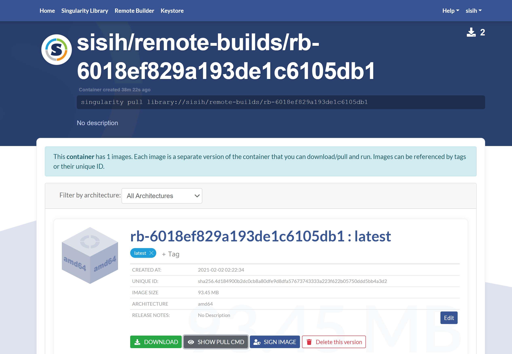

Singularity Quick Start
Singularity: building a root file system that runs on any other Linux system where Singularity is installed.
Commands
- build：建立一个Singularity容器（container）
- capability：管理容器上的Linux功能
- exec：在容器中执行命令
- help：命令帮助
- inspect：显示容器元数据（metadata）
- instance：管理在背景运行的容器
- keys：管理OpenPGP密钥
- pull：从URI拉下容器
- push：推容器到URI库（library）
URI stands for Uniform Resource Identifier, and it’s the official name for those things you see all the time on the Web that begin ‘ http: ‘ or ‘ mailto: ‘
- run：在容器中启动运行脚本
- run-help：容器帮助
- search：搜索库
- shell：在容器中运行Bourne shell
A Bourne shell (sh) is a UNIX shell or command processor that is used for scripting.
- sign：将加密签名附加到容器
- verify：验证容器加密签名
- version：应用版本
下载 pre-built 镜像（images）
search：定位 groups, collections, and containers of interest on the Container Library .
1 | $ singularity search alp |
pull and build：下载 pre-built images from an external resource like the Container Library or Docker Hub.
1 | $ singularity pull library://sylabsed/linux/alpine |
Docker images are stored in layers, so pull must also combine those layers into a usable Singularity file. Pulling Docker images reduces reproducibility. 因为layer会变化。
build下载镜像需要给名字
1 | $ singularity build ubuntu.sif library://ubuntu |
Unlike pull, build will convert your image to the latest Singularity image format after downloading it.
与镜像交互
It is not actually necessary to pull or build an image to interact with it.
1 | $ singularity pull library://sylabsed/examples/lolcow |
Shell
The shell command allows you to spawn a new shell within your container and interact with it as though it were a small virtual machine.
Once inside of a Singularity container, you are the same user as you are on the host system.
1 | [huangsisi@login01 ~]$ singularity shell lolcow_latest.sif |
shell also works with the library://, docker://, and shub:// URIs. This creates an ephemeral container that disappears when the shell is exited.
1 | $ singularity shell library://sylabsed/examples/lolcow |
Executing Commands
The exec command allows you to execute a custom command within a container by specifying the image file.
- 执行cowsay程序
1 | $ singularity exec lolcow_latest.sif cowsay moo |
exec直接跟URIs，cached image，创建一个临时的容器执行命令后消失
1 | $ singularity exec library://sylabsed/examples/lolcow cowsay "Hello, Sisi Huang" |
Running a container
- 运行镜像
The runscript can be triggered with the run command, or simply by calling the container as though it were an executable.
1 | $ singularity run lolcow_latest.sif |
1 | $ ./lolcow_latest.sif |
- 直接跟URIs
1 | $ singularity run library://sylabsed/examples/lolcow |
Working with Files
Files on the host are reachable from within the container.
1 | $ echo "Hello, sisi" > $HOME/hostfile.txt |
By default Singularity bind mounts /home/$USER, /tmp, and $PWD into your container at runtime.
指定目录bind mount into your container with the --bind option.
例如，/data directory on the host system is bind mounted to the /mnt directory inside the container.
1 | $ echo "Drink milk (and never eat hamburgers)." > /data/cow_advice.txt |
Pipes and redirects also work with Singularity commands
1 | $ cat /data/cow_advice.txt | singularity exec lolcow_latest.sif cowsay |
从头创建镜像
Singularity v3.0以 Singularity Image File (SIF)格式生成不可变的镜像，确保可重复性和可验证性。
但是，在测试和调试期间，可能需要可写的镜像格式，安装软件和依赖项，直到确信容器满足需求。对于这些场景，Singularity 还支持sandbox格式（实际上只是一个目录）。
Sandbox Directory
需要root权限
1 | sudo singularity build --sandbox ubuntu/ library://ubuntu |
但我没有权限，所以如下错误
1 | FATAL: container creation failed: mount /usr/local/var/singularity/mnt/session/share->/share error: while mounting /usr/local/var/singularity/mnt/session/share: destination /share doesn't exist in container |
大概猜到sandbox目录在这里：/usr/local/var/singularity/mnt/session/share
Singularity Definition Files
For a reproducible, production-quality container you should build a SIF file using a Singularity definition file. This also makes it easy to add files, environment variables, and install custom software, and still start from your base of choice (e.g., the Container Library).
A definition file has a header and a body.
- The header determines the base container to begin with.
- The body is further divided into sections that do things like install software, setup the environment, and copy files into the container from the host system.
举例
1 | BootStrap: library |
To build a container from this definition file (assuming it is a file named lolcow.def), you would call build like so:
1 | $ sudo singularity build lolcow.sif lolcow.def |
In this example, the header tells Singularity to use a base Ubuntu 16.04 image from the Container Library.
%post：在创建容器时，base OS 安装后即在容器内执行，安装应用。%environment：定义环境变量%runscript：容器执行的动作%lables：自定义元数据添加到容器
但是我没有root权限，singularity给了一种解决办法，采用remote的方式
非root用户创建镜像： Remote Builder
我用github注册
首先登陆
1 | $ singularity remote login |
会有一个生成API密钥的网址，没有的话就去创建一个token，网站上说token要保存好哦，那我就保存了嘿
然后上面那个sudo命令改为
1 | singularity build --remote lolcow.sif lolcow.def |
成功了！可以在 remote builder 里面 My Builds 找到它。

1 | $ singularity pull library://sisih/remote-builds/rb-6018ef829a193de1c6105db1:latest |
Add signature
但这步骤看起来不是必须的
1 | $ singularity key newpair |
注意邮箱不是任意填写的，可能是这个账号绑定的邮箱……总之填错了，它会提示你给的邮箱
1 | Failed to push newly created key to keystore: key server did not accept PGP key: entity *****: primary identity does not contain email '我的邮箱@zju.edu.cn' (400 Bad Request) |
查看 key list 然后 sign
1 | $ singularity key list |
然后再 push，但是不能 push 到原来远程build的临时容器当中，可以这样push到一个新的容器中（非remote-built，我default拼写错误请忽视呜呜）
1 | $ singularity push rb-6018ef829a193de1c6105db1_latest.sif library://sisih/defualt/test:0.0.0 |
它在这里，大家应该都能访问看到 Sylabs Cloud
1 | $ singularity pull --arch amd64 library://sisih/defualt/test:0.0.0 |
1 | $ singularity verify test_0.0.0.sif |
镜像缓存
查看已有cache
1 | $ singularity cache list --verbose |
清除已有cache
1 | $ singularity cache clean |
Reference
https://sylabs.io/guides/3.5/user-guide/quick_start.html